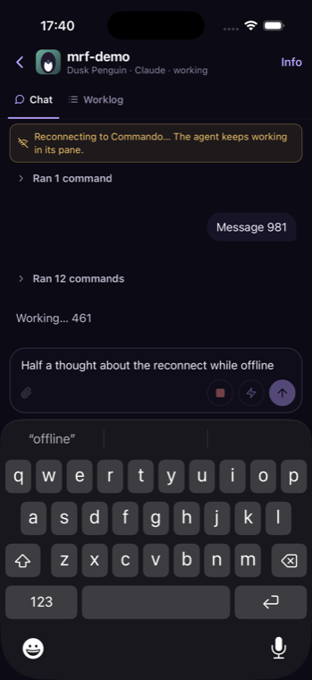

After
Kill the connection mid-sentence and keep typing
before
Draft lost on reconnect
→
after
0.3 s after a forced reconnect: keyboard and draft kept

after
Daemon down for 8 s: banner shows, still typing
 before
before afterbeforeafter
afterbeforeafter